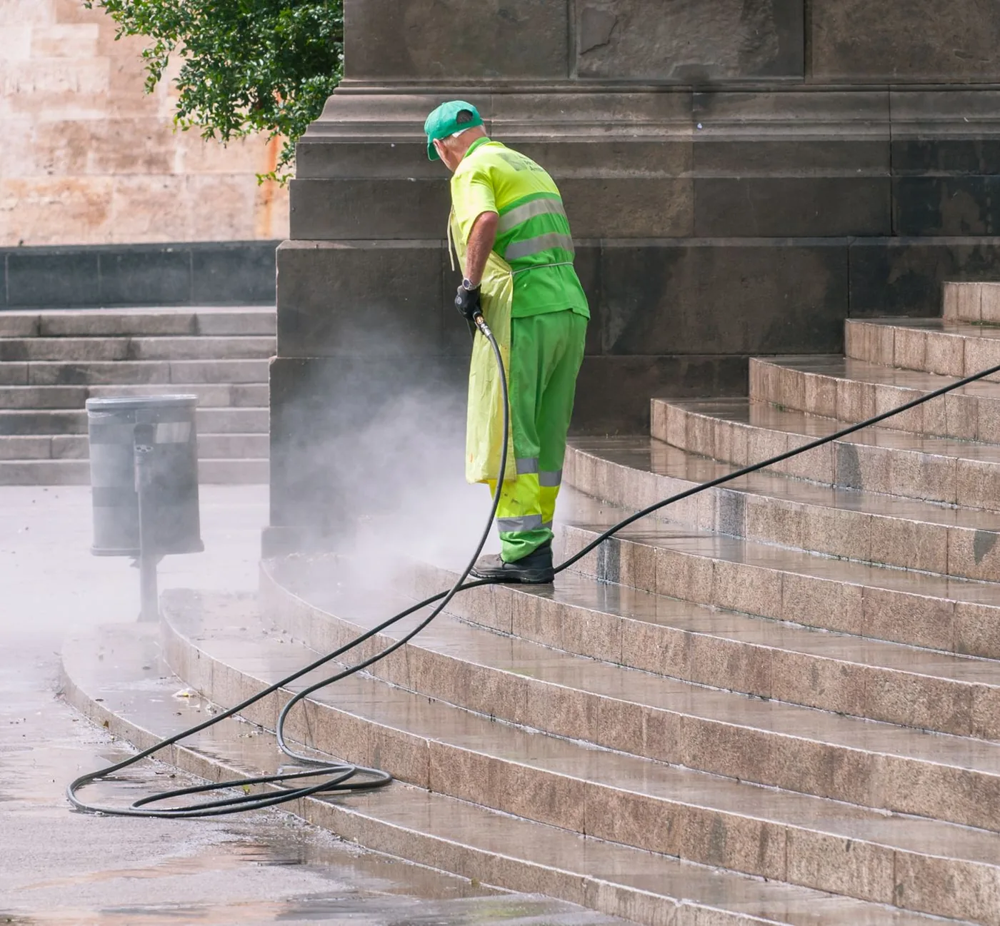

1
Driveways, patios and paths
Block paving, Indian sandstone, concrete and tarmac. We lift the moss, the algae and the black weathering line, then brush fresh kiln-dried sand back into every joint so the blocks lock up again instead of rocking under the car.
Price my driveway